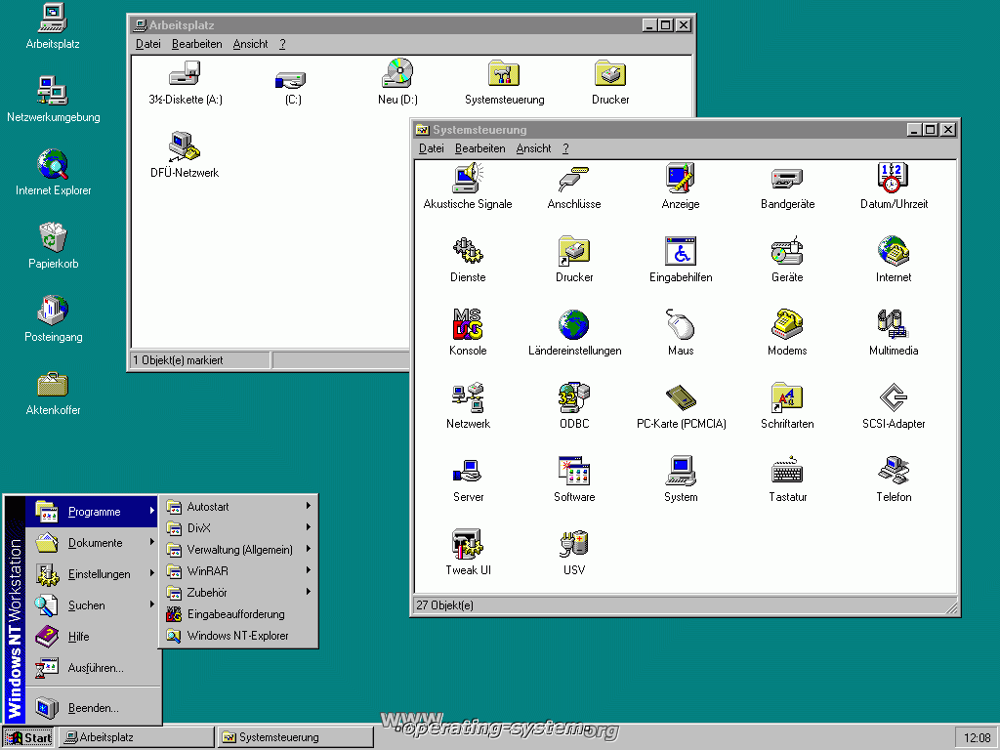
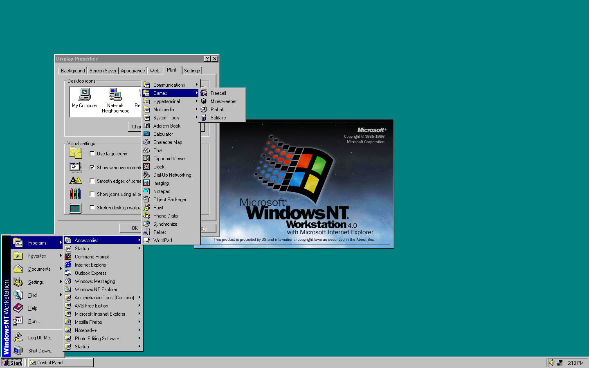
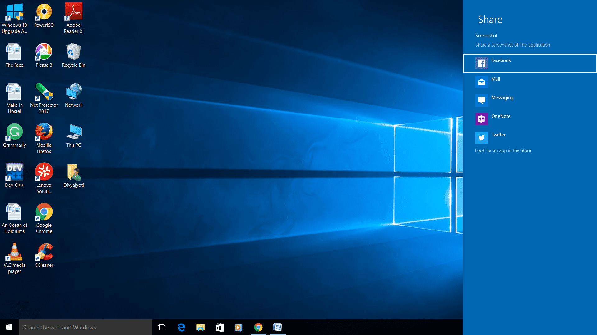
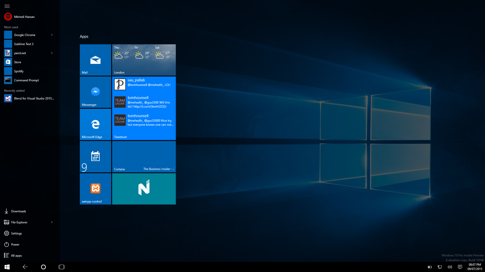

Содержание
Windows NT — линейка операционных систем (ОС) производства корпорации Microsoft и название первых версий ОС.
Windows NT была разработана в начале 1990-х после прекращения сотрудничества Microsoft и IBM над OS/2, развивалась отдельно от других ОС семейства Windows (Windows 3.x и Windows 9x) и, в отличие от них, позиционировалась как надёжное решение для рабочих станций (Windows NT Workstation) и серверов (Windows NT Server).Windows NT дала начало семейству операционных систем, в которое входят: собственно Windows NT 3.1, Windows NT 3.50, Windows NT 3.51, Windows NT 4.0, Windows 2000, Windows XP, Windows XP Professional x64 Edition, Windows Server 2003, Windows Vista, Windows Server 2008, Windows 7, Windows Server 2008 R2, Windows 8, Windows 8.1, Windows Server 2012, Windows Server 2012 R2, Windows 10, Windows Server 2016, Windows Server 2019, Windows 11, Windows Server 2022.
История разработки
Разработка Windows NT под рабочим названием «NT OS/2» была начата в ноябре 1988 года группой специалистов во главе с Дэвидом Катлером, который перешёл в Microsoft из DEC, где они разрабатывали VAX и OpenVMS. Работа шла параллельно с разработкой фирмой IBM собственной ОС, OS/2 2.0, которая окончательно вышла только в апреле 1992 года. В России была выпущена 13 июня 1992 года.
Одновременно с этим корпорация Microsoft продолжала разрабатывать свои ОС семейства DOS и Windows, отличающиеся меньшими требованиями к ресурсам компьютера, чем IBM OS/2. После того, как в мае 1990 года была выпущена Windows 3.0, Microsoft решила добавить в NT OS/2 программный интерфейс (API), совместимый с Windows API. Это решение вызвало серьёзные трения между фирмами Майкрософт и IBM, которые закончились разрывом совместной работы. IBM продолжила разработку OS/2 самостоятельно, а Microsoft стала работать над системой, которая была в результате выпущена под названием Windows NT. Хотя эта система не сразу стала популярной, подобно DOS, Windows 3.x или Windows 9x, с точки зрения маркетинга Windows NT оказалась существенно более удачной, чем OS/2.
В качестве программных интерфейсов ОС NT изначально планировались API OS/2 и затем POSIX, поддержка Windows API была добавлена в последнюю очередь. Кроме того, в качестве аппаратной платформы для NT изначально планировались Intel i860 и затем MIPS, поддержка Intel x86 также была добавлена позднее. Затем в процессе эволюции этой ОС исчезла поддержка обоих изначально запланированных программных интерфейсов и обеих изначально запланированных аппаратных платформ. Для i860 не было ни одной стабильной версии этой ОС, хотя именно от кодового названия этого процессора, N10 (N Ten), происходит название самой ОС NT. Ныне Microsoft расшифровывает аббревиатуру NT как New Technology. А в качестве альтернативы POSIX-подсистеме Microsoft стала предлагать Подсистему для приложений на базе UNIX. В обновлении «Anniversary Update» для Windows 10 за июль 2016 года предложена бета-версия подсистемы Windows Subsystem for Linux для выполнения бинарных исполняемых файлов для ядра Linux без применения виртуализации. В качестве базовой системы предлагается образ Ubuntu, в версии за 11 апреля 2017 добавлены также образы SUSE и Fedora.
Переносимость NT была одной из её первоочередных задач. Именно поэтому разработка этой ОС изначально велась для процессора i860, хотя двоичная совместимость с OS/2, бывшая одним из условий проекта NT OS/2, в любом случае потребовала бы создания версии NT для x86 либо включения в неё эмуляции этой платформы. Количество платформ, для которых существовали релизные версии ОС семейства Windows NT, впечатляет: кроме названных MIPS и Intel x86, сюда входят PowerPC, DEC Alpha, Itanium и AMD x86-64. Независимыми производителями компьютерных систем были также разработаны версии Windows NT для архитектур Clipper (англ.) и SPARC; однако эти версии не были выпущены как самостоятельные программные продукты. В качестве ОС высокой переносимости при разработке NT были взяты за пример ОС Unix и Mach.
Для разработки ОС NT фирма Microsoft пригласила группу специалистов из компании DEC во главе с Дэвидом Катлером, обладающую опытом создания многозадачных операционных систем, таких как VAX/VMS и RSX-11. Некоторое сходство, отмеченное между внутренними архитектурами Windows NT и ОС семейства VMS, дало основания обвинить вновь принятых сотрудников Microsoft в краже интеллектуальной собственности DEC. Возникший конфликт был разрешён мирным путём: DEC признала собственность Microsoft на технологии, лежащие в основе Windows NT, а Microsoft создавала и поддерживала версию Windows NT для архитектуры DEC Alpha.
Несмотря на общие корни, совместимость Windows NT и OS/2 уменьшалась с каждым новым выпуском этой ОС. Поддержка API OS/2 2.0, хотя планировалась в NT, так и не была завершена; в Windows NT 4.0 была удалена поддержка файловой системы HPFS, а в Windows XP была удалена подсистема поддержки программ для OS/2 1.x.
Внутренняя архитектура
Компоненты пользовательского режима
Подсистема пользовательского интерфейса в Windows NT реализует оконный интерфейс, подобный интерфейсу предыдущих версий Windows. Двумя типами объектов этой подсистемы, отсутствовавшими в 16-битных версиях Windows и в Windows 9x, являются оконные станции и рабочие столы. Оконная станция соответствует одному сеансу пользователя Windows NT — например, при подключении через службу удалённого рабочего стола создаётся новая оконная станция. Каждый запущенный процесс принадлежит одной из оконных станций; службы, кроме помеченных как способные взаимодействовать с рабочим столом, запускаются в отдельных, невидимых оконных станциях.
Каждая оконная станция имеет собственный буфер обмена, набор глобальных атомов (используемых для операций DDE), и набор рабочих столов. Рабочий стол является контекстом всех глобальных операций подсистемы пользовательского интерфейса, таких как установка хуков и широковещательная рассылка сообщений. Каждый запущенный поток принадлежит к одному из рабочих столов — тому, где расположены обслуживаемые им окна; в частности, один поток не может создать несколько окон, принадлежащих к различным рабочим столам. Один из рабочих столов может быть активным (видимым пользователю и способным реагировать на его действия), остальные рабочие столы спрятаны. Возможность создать для одного сеанса работы несколько рабочих столов и переключаться между ними до выхода Windows 10 не предоставлялась стандартными средствами пользовательского интерфейса Windows, хотя существуют сторонние программы, дающие доступ к этой функциональности.
Оконными станциями и рабочими столами исчерпываются объекты подсистемы пользовательского интерфейса Windows NT, которым могут быть назначены права доступа. Оставшиеся типы объектов — окна и меню — предоставляют полный доступ любому процессу, который находится с ними в одной оконной станции. Поэтому службы Windows NT по умолчанию запускаются в отдельных оконных станциях: они работают с повышенными привилегиями, и возможность процессов пользователя неограниченно манипулировать окнами служб могла бы привести к сбоям и/или проблемам безопасности.
Программные интерфейсы
Native API
Для прикладных программ системой Windows NT предоставляется несколько наборов API. Основной из них — так
называемый «родной» API (NT Native API), реализованный в динамически подключаемой библиотеке
ntdll.dll> и
состоящий из двух частей: системные вызовы ядра NT (функции с префиксами Nt и Zw, передающие выполнение
функциям ядра ntoskrnl.exe с теми же названиями) и функции, реализованные в пользовательском
режиме (с
префиксом Rtl). Часть функций второй группы используют внутри себя системные вызовы; остальные целиком
состоят из непривилегированного кода, и могут вызываться не только из кода пользовательского режима, но и из
драйверов. Кроме функций Native API, в ntdll также включены функции стандартной библиотеки
языка Си.
Официальная документация на Native API весьма скудна, но сообществам энтузиастов удалось методом проб и ошибок собрать достаточно обширные сведения об этом интерфейсе. В частности, в феврале 2000 года опубликована книга Гэри Неббета «Справочник по базовым функциям API Windows NT/2000» (ISBN 1-57870-199-6); в 2002 году она была переведена на русский язык (ISBN 5-8459-0238-X). Источником информации о Native API может служить Windows DDK, где описаны некоторые функции ядра, доступные посредством Native API, а также изучение кода Windows (обратная разработка) — посредством дизассемблирования либо используя исходные тексты Windows 2000, ставшие доступными в результате утечки, либо используя исходные тексты Windows Server 2003, доступные в рамках программы Windows Research Kernel.
Программы, выполняющиеся до загрузки подсистем, обеспечивающих работу остальных API ОС Windows NT, ограничены
использованием Native API. Например, программа autochk, проверяющая диски при загрузке ОС после
некорректного завершения работы, использует только Native API.
Win32 API
Чаще всего прикладными программами для Windows NT используется Win32 API — интерфейс, созданный на основе API ОС Windows 3.1, и позволяющий перекомпилировать существующие программы для 16-битных версий Windows с минимальными изменениями исходного кода. Совместимость Win32 API и 16-битного Windows API настолько велика, что 32-битные и 16-битные приложения могут свободно обмениваться сообщениями, работать с окнами друг друга и т. д. Кроме поддержки функций существовавшего Windows API, в Win32 API был также добавлен ряд новых возможностей, в том числе поддержка консольных программ, многопоточности и объектов синхронизации, таких как мьютексы и семафоры. Документация на Win32 API входит в состав Microsoft Platform SDK и доступна на веб-сайте.
Поддержка Win32 API включена в семейство ОС Windows 9x; кроме того, она может быть добавлена в Windows 3.1x установкой пакета Win32s. Для облегчения переноса существующих Windows-приложений, использующих для представления строк MBCS-кодировки, все функции Win32 API, принимающие параметрами строки, были созданы в двух версиях: функции с суффиксом A (ANSI) принимают MBCS-строки, а функции с суффиксом W (wide) принимают строки в кодировке UTF-16. В Win32s и Windows 9x поддерживаются только A-функции, тогда как в Windows NT, где все строки внутри ОС хранятся исключительно в UTF-16, каждая A-функция просто преобразует свои строковые параметры в Юникод и вызывает W-версию той же функции. В поставляемых H-файлах библиотеки также определены имена функций без суффикса, и использование A- либо W-версии функций определяется опциями компиляции, а в модулях Delphi до 2010 версии, например, они жёстко завязаны на варианты с суффиксом A. При этом большинство новых функций, появившихся в Windows 2000 или более поздних ОС семейства Windows NT, существует только в Unicode-версии, потому что задача обеспечения совместимости со старыми программами и с ОС Windows 9x уже не стоит так остро, как раньше.
POSIX и OS/2
В отличие от большинства свободных Unix-подобных ОС, Windows NT сертифицирована институтом NIST на совместимость со стандартом POSIX.1, и даже с более строгим стандартом FIPS 151-2. Библиотекой psxdll экспортируются стандартные функции POSIX, а также некоторые функции Native API, не имеющие аналогов в POSIX — например, для работы с кучей, со структурными исключениями, с Юникодом. Внутри этих функций используются как Native API, так и LPC-вызовы в подсистему psxss, являющуюся обычным Win32-процессом.
Обе эти подсистемы, необязательные для работы большинства приложений, были удалены в Windows XP и последующих выпусках Windows. При помощи манипуляций с реестром их можно было отключить и в предыдущих версиях Windows NT, что рекомендовалось специалистами по компьютерной безопасности в целях сокращения поверхности атаки компьютерной системы.
DOS и Win16
Чтобы обеспечить двоичную совместимость с существующими программами для предыдущих семейств ОС от Microsoft, в Windows NT была добавлена программа-эмулятор ntvdm, реализующая VDM (виртуальную DOS-машину), внутри которой может выполняться программа для DOS. Для каждой выполняемой DOS-программы создаётся собственная VDM, тогда как несколько 16-битных Windows-программ могут выполняться в отдельных потоках внутри одной VDM, которая в этом случае играет роль подсистемы. Для того, чтобы внутри VDM можно было выполнять программы для Windows, в неё сначала должна быть загружена программа wowexec, устанавливающая связь VDM с платформой WOW («Windows on Win32»), позволяющей использовать 16-битные приложения для Windows наравне с 32-битными. Сама программа-эмулятор ntvdm выполняется внутри подсистемы Win32, что позволяет Win32-программам обращаться к окнам DOS-программ как к обычным консольным окнам, а к окнам Win16-программ — как к обычным графическим окнам.
В связи с аппаратными ограничениями 64-битных платформ, поддержка VDM и WOW была исключена из 64-битных версий Windows, запуск 16-битных программ средствами системы на них невозможен, но возможно использование эмуляторов, таких как DOSBox. Основным API этих версий Windows NT является 64-битная версия Win32 API; для запуска 32-битных программ используется технология WOW64, аналогичная традиционной WOW.
Ссылки
- Microsoft: microsoft.com